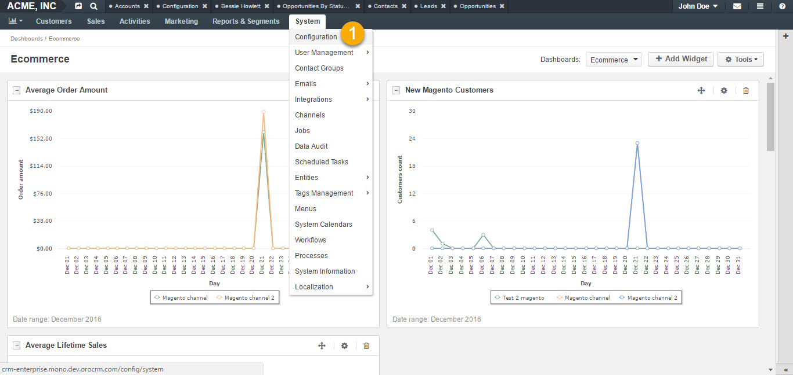
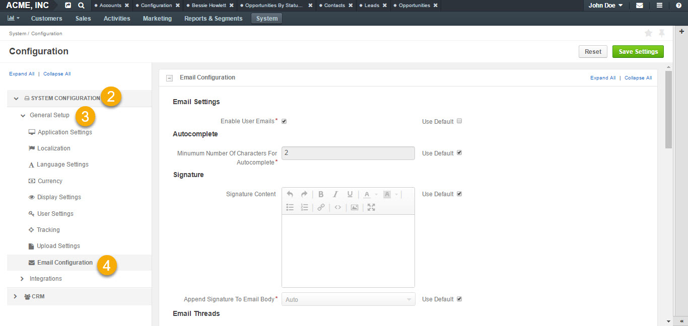
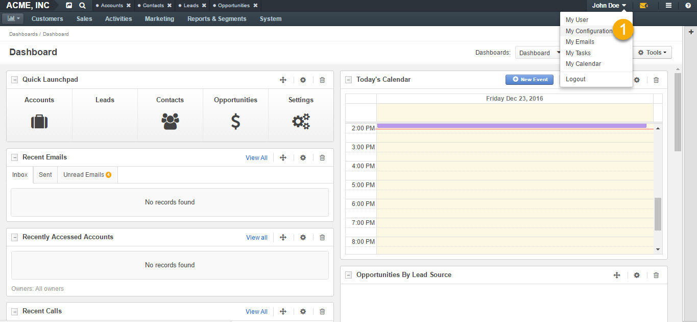
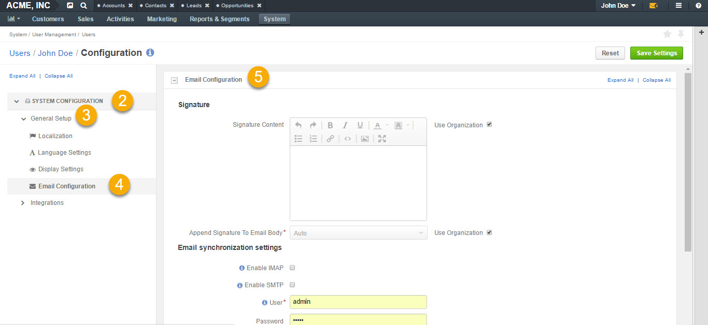
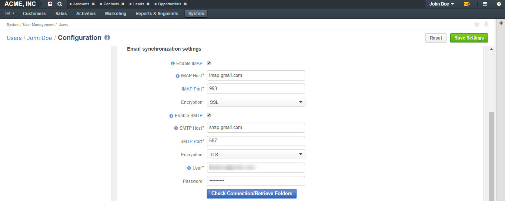
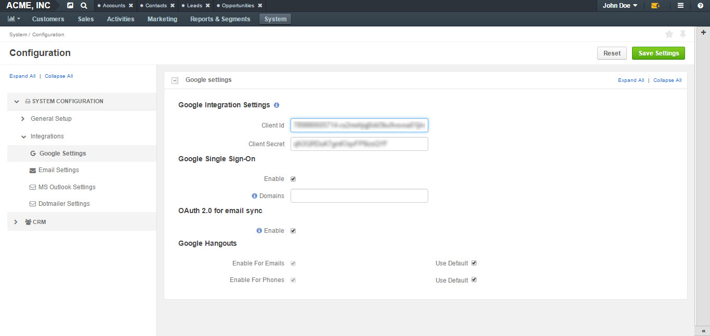
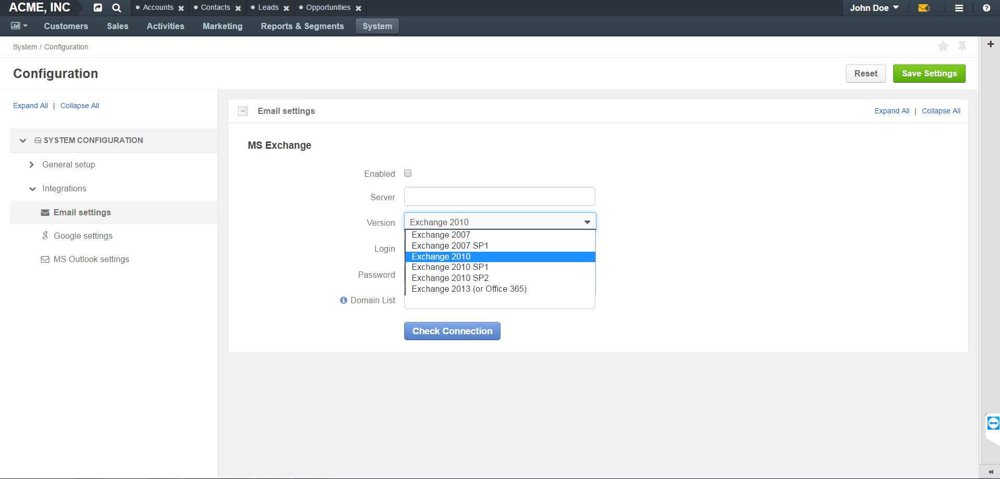
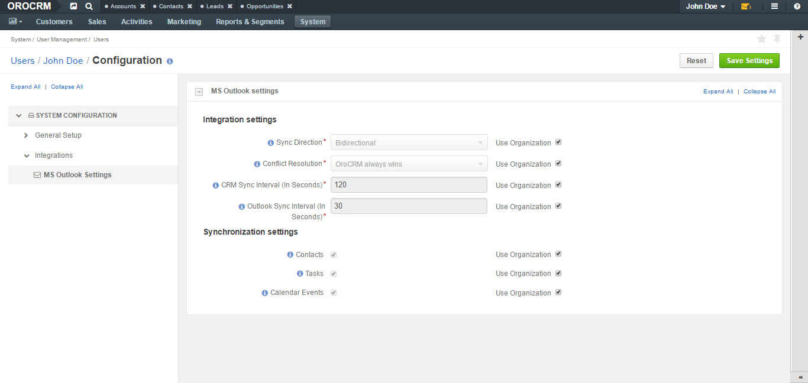

Email Configuration¶
The following guide will introduce you to the email settings and provide instructions on how to configure personal and system mailboxes, and integrate with Google, MS Exchange and Outlook.
To reach the Email Configuration page:
- Navigate to System > Configuration in the main menu.
 
- In the panel to the left, click System Configuration > General Setup > Email Configuration.
General Settings¶
On the Email Configuration page, you can define options applied to all the emails generated within your application.
The following settings are available:
| Field | Description |
|---|---|
| Autocomplete | Define how many characters need to be entered manually to enable auto-complete for emails. |
| Signature | You can define a signature that will be added to all the email bodies created within the instance. The following fields are available: - Signature Content: Specify the text and formatting of your signature (by default, the email signature body is empty). - Append Signature to Email Body: Defines whether a signature is added automatically or manually. |
| Email Threads | Display Email Conversations As and Display Emails In Activities As fields define how emails and replies will be displayed to the users, as threads or separately. Two options are available: threaded and non-threaded |
| Field | Description |
|---|---|
| Reply | This field defines which button will be displayed as the default one: Reply button is available by default with the Forward ** and ** Reply all options in its dropdown. The settings can be changed to have Reply all shown at the top. |
| Field | Description |
|---|---|
| Attachments | Attachment option has the following fields:
|
| HTML in templates | Here, you can enable or disable HTML purifier. Disabling HTML purifier allows to paste any HTML code into a template or an email body editor without tag stripping. |
| Notification Rules | The section defines the rules that will be applied by default to a notification generated in the OroCRM. You can define the Sender Email and Sender Name to be used. |
| Maintenance Notifications |
|
| Campaign | The section defines the rules that will be applied by default to emails generated as a part of marketing campaigns in OroCRM. You can define the Sender Email and Sender Name to be used. |
| System Mailboxes | A system mailbox allows people who do not have access to the company mailbox addresses write to the company. To add a new system mailbox, click Add Mailbox. More information on System Mailboxes and their configuration can be found further below in this guide. |
Standard Personal Mailbox Configuration (IMAP/SMTP)¶
Accessing Personal Mailbox Configuration¶
To configure a personal mailbox:
Navigate to My User>My Configuration in the top right corner.
Click Email Configuration in the General Setup tab on the left.
This will load an email configuration page.
 
Configuring IMAP/SMPT¶
IMAP and SMTP are protocols used for mail delivery.
- IMAP (Internet Message Access Protocol) allows to retrieve email messages, while
- SMTP (Simple Mail Transfer Protocol) allows to send them out.
To retrieve your mail from a mail client and sync data into OroCRM, as well as synchronize emails sent from OroCRM into your mailbox (so you can see them in other email clients):
- Check Enable IMAP and Enable SMTP.
- Fill in the following fields: IMAP and SMTP Host, IMAP and SMTP Port, Encryption (SSL, TLS).
- Click Check Connection/Retrieve Folders.
- After successful connection, a list of folders will be loaded.
- Check the folders that you wish to be synchronized (e.g. Inbox).
As an example, we have synchronized a Gmail mailbox with OroCRM, having previously turned on access for less secure apps. More details on how to synchronize your Gmail and turn on access for less secured apps can be found here and here
- Click Save Settings.
Google Integration¶
The only integration available in the community edition by default is integration with Google:
- Navigate to System > Configuration in the main menu.
- In the panel to the left, click Integrations > Google Settings.
Here, you can define the details used for Google single sign-on which allows a user with the same Google account email address and OroCRM primary email address to log-in only once in the session.
See how to configure Google Sign-on integration in the Google Integration guide.
MS Exchange Integration¶
OroCRM Enterprise Edition supports integration with Microsoft Exchange server. This means that emails from mailboxes on the MS Exchange server can be automatically uploaded to OroCRM.
This functionality enables using a single system-wide setting to collect letters of multiple users within organization.
The integration set-up is described in the relevant MS Exchange guide.
Microsoft Outlook Integration¶
Integration with Microsoft Outlook is available for the OroCRM Enterprise Edition only.
The integration allows automatic synchronization of all the contacts. Tasks and calendar events available for the user can be synchronized with the specified Outlook account and vice versa. The integration set-up is described in the relevant Outlook Integration guide.
Note
Please note emails are not synced in the course of Outlook integration. For that, please, refer to Standard personal mailbox configuration (IMAP/SMTP) section.
Configuration of System Mailboxes¶
System mailbox allows people who do not have access to the company mailbox addresses write to the company.
To create a system mailbox to process business information requests:
- Navigate to System in the main menu, click Configuration.
- Next, click Email Configuration on the left in the General Setup menu.
- At the bottom of the page, you will see a section where you can create and configure a system mailbox.
- Click Add Mailbox in the bottom right corner, as shown below:

General¶
The General section defines the basic settings of the mailbox created:
- Define a name of your Mailbox in the Mailbox Label field.
- Type in your email address.

Synchronization¶
In the Synchronization section, configure your IMAP/SMTP connection:
- Select your Account type. If the value in the field is changed, a new mailbox will be registered and data from the previous mailbox will be lost.
- Enable IMAP and SMTP and enter configuration details for connecting to IMAP and SMTP server for the mailbox. This includes host, port, and encryption.
- Specify the login username and password for this mailbox.
- Once the credentials and configuration fields are filled in, click the Check Connection/Retrieve Folders button. After successful connection, a list of available folders will be displayed.
- Check the Folders to be synchronized.

Email Processing¶
In the Email Processing section you can choose what actions will be performed with all the emails received in the mailbox.
Out of the box three different actions are available.
This functionality can be expanded through customization to match your business’s unique requirements.
Do nothing. In this case no actions will be performed. Emails will be saved in the mailbox and can be accessed by those users with the permission to do so.
Convert to Lead. Letters will be saved in the mailbox and a new lead record will be created in OroCRM.
Note
In order to have an option to Convert to Lead, you need to have a Sales channel activated. Otherwise, this option will not be available on the list of options.
Convert to Case. A new case record will be created in OroCRM based on the email received.

As an example, let us select the Convert To Lead option:
- Once the action has been selected, define which user will own the records and choose the source of your leads in the Source field.

Note
Options in the Source field should be defined in advance. This can be done through the entity manager in System>Entities>Entity Management>Lead>Source.


Access Management¶
in the Access management section, define which OroCRM users will have access to the system mailbox. You can select roles and/or specific users. All the users with defined roles and all the specifically defined users will have access to this mailbox.

Autoresponse Rules¶
In the Autoresponse Rules section you can generate one or several auto-response rules. These rules will determine which template is sent to the sender of the email.
- Click Add Rule to add a new Autoresponse rule.
- An Add Autoresponse Rule form will open.

- Define the following settings:
| Field | Description |
|---|---|
| Status (Active/Inactive) | Only rules with active statuses are applied. |
| Name | Select the name for the rule to be used within the system. |
| Conditions | Define the rules according to which the rule will be applied: 1. In the first selector, choose the field for which the condition is to be set: Body, From, Cc, Bcc. 2. In the second selector, choose the conditions (e.g. contains, does not contain, is equal to, starts with, etc.). 3. In the field besides the selectors, define the values where required. Click the + or +Add button to add another condition for the rule. Click the x button to remove the condition. All conditions are summed up (AND operator). |
| Response template | Choose an email template for autoresponse. |
| Type | Choose if you want to use html or plain text for the email. |
| Translations | If you have more than one language configured in the system, select the necessary translation. |
| Email Template | Enter the subject and content of your email. |
| Save Response As Email Template | Checking the box automatically saves the current email as a template. |
- Click Add to save the rule.